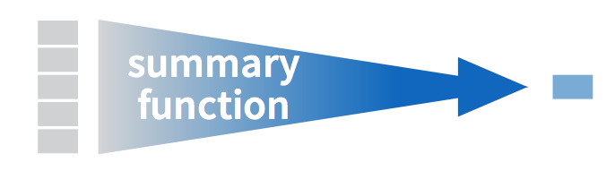
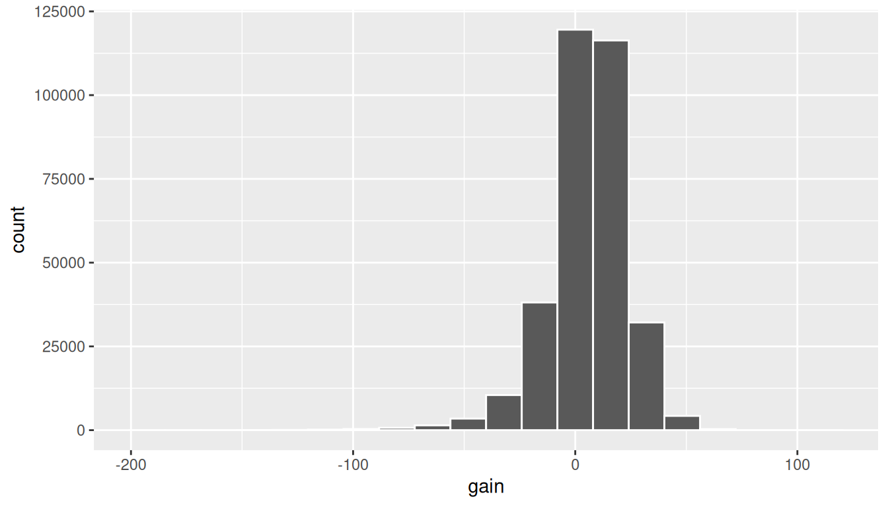

alaska_flights <- flights %>%
filter(carrier == "AS")
ggplot(data = alaska_flights, mapping = aes(x = dep_delay, y = arr_delay)) +
geom_point()3 Data Wrangling
So far in our journey, we’ve seen how to look at data saved in data frames using the glimpse() and View() functions in Chapter 1 on and how to create data visualizations using the ggplot2 package in Chapter 2. In particular we studied what we term the “five named graphs” (5NG):
- scatterplots via
geom_point() - linegraphs via
geom_line() - boxplots via
geom_boxplot() - histograms via
geom_histogram() - barplots via
geom_bar()orgeom_col()
We created these visualizations using the “Grammar of Graphics”, which maps variables in a data frame to the aesthetic attributes of one the above 5 geometric objects. We can also control other aesthetic attributes of the geometric objects such as the size and color as seen in the Gapminder data example in Figure 2.1.
Recall however in Section 2.9.4 we discussed that for two of our visualizations we needed transformed/modified versions of existing data frames. Recall for example the scatterplot of departure and arrival delay only for Alaska Airlines flights. In order to create this visualization, we needed to first pare down the flights data frame to a new data frame alaska_flights consisting of only carrier == "AS" flights using the filter() function.
In this chapter, we’ll introduce a series of functions from the dplyr package that will allow you to take a data frame and
filter()its existing rows to only pick out a subset of them. For example, thealaska_flightsdata frame above.summarize()one of its columns/variables with a summary statistic. Examples include the median and interquartile range of temperatures as we saw in Section 2.7 on boxplots.group_by()its rows. In other words assign different rows to be part of the same group and report summary statistics for each group separately. For example, say perhaps you don’t want a single overall average departure delaydep_delayfor all threeoriginairports combined, but rather three separate average departure delays, one for each of the threeoriginairports.mutate()its existing columns/variables to create new ones. For example, convert hourly temperature recordings from °F to °C.arrange()its rows. For example, sort the rows ofweatherin ascending or descending order oftemp.join()it with another data frame by matching along a “key” variable. In other words, merge these two data frames together.
Notice how we used computer code font to describe the actions we want to take on our data frames. This is because the dplyr package for data wrangling that we’ll introduce in this chapter has intuitively verb-named functions that are easy to remember.
We’ll start by introducing the pipe operator %>%, which allows you to combine multiple data wrangling verb-named functions into a single sequential chain of actions.
Packages Needed
Let’s load all the packages needed for this chapter (this assumes you’ve already installed them). If needed, read Section 1.3 for information on how to install and load R packages.
library(dplyr)
library(ggplot2)
library(nycflights13)3.1 The pipe operator: %>%
Before we start data wrangling, let’s first introduce a very nifty tool that gets loaded along with the dplyr package: the pipe operator %>%. Say you would like to perform a hypothetical sequence of operations on a hypothetical data frame x using hypothetical functions f(), g(), and h():
- Take
xthen - Use
xas an input to a functionf()then - Use the output of
f(x)as an input to a functiong()then - Use the output of
g(f(x))as an input to a functionh()
One way to achieve this sequence of operations is by using nesting parentheses as follows:
h(g(f(x)))The above code isn’t so hard to read since we are applying only three functions: f(), then g(), then h(). However, you can imagine that this can get progressively harder and harder to read as the number of functions applied in your sequence increases. This is where the pipe operator %>% comes in handy. %>% takes one output of one function and then “pipes” it to be the input of the next function. Furthermore, a helpful trick is to read %>% as “then.” For example, you can obtain the same output as the above sequence of operations as follows:
x %>%
f() %>%
g() %>%
h()You would read this above sequence as:
- Take
xthen - Use this output as the input to the next function
f()then - Use this output as the input to the next function
g()then - Use this output as the input to the next function
h()
So while both approaches above would achieve the same goal, the latter is much more human-readable because you can read the sequence of operations line-by-line. But what are the hypothetical x, f(), g(), and h()? Throughout this chapter on data wrangling:
The starting value
xwill be a data frame. For example:flights.The sequence of functions, here
f(),g(), andh(), will be a sequence of any number of the 6 data wrangling verb-named functions we listed in the introduction to this chapter. For example:filter(carrier == "AS").The result will be the transformed/modified data frame that you want. For example: a data frame consisting of only the subset of rows in
flightscorresponding to Alaska Airlines flights.
Much like when adding layers to a ggplot() using the + sign at the end of lines, you form a single chain of data wrangling operations by combining verb-named functions into a single sequence with pipe operators %>% at the end of lines. So continuing our example involving Alaska Airlines flights, we form a chain using the pipe operator %>% and save the resulting data frame in alaska_flights:
alaska_flights <- flights %>%
filter(carrier == "AS")Keep in mind, there are many more advanced data wrangling functions than just the 6 listed in the introduction to this chapter; you’ll see some examples of these in Section 3.8. However, just with these 6 verb-named functions you’ll be able to perform a broad array of data wrangling tasks for the rest of this book.
3.2 filter() rows

The filter() function here works much like the “Filter” option in Microsoft Excel; it allows you to specify criteria about the values of a variable in your dataset and then filters out only those rows that match that criteria. We begin by focusing only on flights from New York City to Portland, Oregon. The dest code (or airport code) for Portland, Oregon is "PDX". Run the following and look at the resulting spreadsheet to ensure that only flights heading to Portland are chosen here:
portland_flights <- flights %>%
filter(dest == "PDX")
View(portland_flights)Note the following:
- The ordering of the commands:
- Take the
flightsdata frameflightsthen filterthe data frame so that only those where thedestequals"PDX"are included.
- Take the
- We test for equality using the double equal sign
==and not a single equal sign=. In other wordsfilter(dest = "PDX")will yield an error. This is a convention across many programming languages. If you are new to coding, you’ll probably forget to use the double equal sign==a few times before you get the hang of it.
You can use other mathematical operations beyond just == to form criteria:
>corresponds to “greater than”<corresponds to “less than”>=corresponds to “greater than or equal to”<=corresponds to “less than or equal to”!=corresponds to “not equal to”. The!is used in many programming languages to indicate “not”.
Furthermore, you can combine multiple criteria together using operators that make comparisons:
|corresponds to “or”&corresponds to “and”
To see many of these in action, let’s filter flights for all rows that:
- Departed from JFK airport and
- Were heading to Burlington, Vermont (
"BTV") or Seattle, Washington ("SEA") and - Departed in the months of October, November, or December.
Run the following:
btv_sea_flights_fall <- flights %>%
filter(origin == "JFK" & (dest == "BTV" | dest == "SEA") & month >= 10)
View(btv_sea_flights_fall)Note that even though colloquially speaking one might say “all flights leaving Burlington, Vermont and Seattle, Washington,” in terms of computer operations, we really mean “all flights leaving Burlington, Vermont or leaving Seattle, Washington.” For a given row in the data, dest can be “BTV”, “SEA”, or something else, but not “BTV” and “SEA” at the same time. Furthermore, note the careful use of parentheses around the dest == "BTV" | dest == "SEA".
We can often skip the use of & and just separate our conditions with a comma. In other words the code above will return the identical output btv_sea_flights_fall as this code below:
btv_sea_flights_fall <- flights %>%
filter(origin == "JFK", (dest == "BTV" | dest == "SEA"), month >= 10)
View(btv_sea_flights_fall)Let’s present another example that uses the ! “not” operator to pick rows that don’t match a criteria. As mentioned earlier, the ! can be read as “not.” Here we are filtering rows corresponding to flights that didn’t go to Burlington, VT or Seattle, WA.
not_BTV_SEA <- flights %>%
filter(!(dest == "BTV" | dest == "SEA"))
View(not_BTV_SEA)Again, note the careful use of parentheses around the (dest == "BTV" | dest == "SEA"). If we didn’t use parentheses as follows:
flights %>%
filter(!dest == "BTV" | dest == "SEA")We would be returning all flights not headed to "BTV" or those headed to "SEA", which is an entirely different resulting data frame.
Now say we have a large list of airports we want to filter for, say BTV, SEA, PDX, SFO, and BDL. We could continue to use the | or operator as so:
many_airports <- flights %>%
filter(dest == "BTV" | dest == "SEA" | dest == "PDX" | dest == "SFO" | dest == "BDL")
View(many_airports)but as we progressively include more airports, this will get unwieldy. A slightly shorter approach uses the %in% operator:
many_airports <- flights %>%
filter(dest %in% c("BTV", "SEA", "PDX", "SFO", "BDL"))
View(many_airports)What this code is doing is filtering flights for all flights where dest is in the list of airports c("BTV", "SEA", "PDX", "SFO", "BDL"). Recall from Chapter 1 that the c() function “combines” or “concatenates” values in a vector of values. Both outputs of many_airports are the same, but as you can see the latter takes much less time to code.
As a final note we point out that filter() should often be among the first verbs you apply to your data. This cleans your dataset to only those rows you care about, or put differently, it narrows down the scope of your data frame to just the observations you care about.
3.3 summarize() variables
The next common task when working with data is to return summary statistics: a single numerical value that summarizes a large number of values, for example the mean/average or the median. Other examples of summary statistics that might not immediately come to mind include the sum, the smallest value AKA the minimum, the largest value AKA the maximum, and the standard deviation; they are all summaries of a large number of values.


Let’s calculate the mean and the standard deviation of the temperature variable temp in the weather data frame included in the nycflights13 package (See Appendix A). We’ll do this in one step using the summarize() function from the dplyr package and save the results in a new data frame summary_temp with columns/variables mean and the std_dev. Note you can also use the UK spelling of summarise().
The weather data frame’s many rows will now be collapsed into a single row of just the summary values, in this case the mean and standard deviation:
summary_temp <- weather %>%
summarize(mean = mean(temp), std_dev = sd(temp))
summary_temp# A tibble: 1 × 2
mean std_dev
<dbl> <dbl>
1 NA NAWhy are the values returned NA? As we saw in Section 2.3.1 when creating the scatterplot of departure and arrival delays for alaska_flights, NA is how R encodes missing values where NA indicates “not available” or “not applicable.” If a value for a particular row and a particular column does not exist, NA is stored instead. Values can be missing for many reasons. Perhaps the data was collected but someone forgot to enter it? Perhaps the data was not collected at all because it was too difficult? Perhaps there was an erroneous value that someone entered that has been correct to read as missing? You’ll often encounter issues with missing values when working with real data.
Going back to our summary_temp output above, by default any time you try to calculate a summary statistic of a variable that has one or more NA missing values in R, then NA is returned. To work around this fact, you can set the na.rm argument to TRUE, where rm is short for “remove”; this will ignore any NA missing values and only return the summary value for all non-missing values.
The code below computes the mean and standard deviation of all non-missing values of temp. Notice how the na.rm=TRUE are used as arguments to the mean() and sd() functions individually, and not to the summarize() function.
summary_temp <- weather %>%
summarize(mean = mean(temp, na.rm = TRUE),
std_dev = sd(temp, na.rm = TRUE))
summary_temp# A tibble: 1 × 2
mean std_dev
<dbl> <dbl>
1 55.3 17.8However, one needs to be cautious whenever ignoring missing values as we’ve done above. In the upcoming Learning Checks we’ll consider the possible ramifications of blindly sweeping rows with missing values “under the rug.” This is in fact why the na.rm argument to any summary statistic function in R has is set to FALSE by default; in other words, do not ignore rows with missing values by default. R is alerting you to the presence of missing data and you should by mindful of this missingness and any potential causes of this missingness throughout your analysis.
What are other functions for summary statistics can we use inside the summarize() verb? We can use any function in R that takes many values and returns just one. Here are just a few:
mean(): the mean AKA the averagesd(): the standard deviation, which is a measure of spreadmin()andmax(): the minimum and maximum values respectivelyIQR(): Interquartile rangesum(): the sumn(): a count of the number of rows/observations in each group. This particular summary function will make more sense whengroup_by()is covered in Section 3.4.
3.4 group_by() rows

Say instead of the a single mean temperature for the whole year, you would like 12 mean temperatures, one for each of the 12 months separately? In other words, we would like to compute the mean temperature split by month AKA sliced by month AKA aggregated by month. We can do this by “grouping” temperature observations by the values of another variable, in this case by the 12 values of the variable month. Run the following code:
summary_monthly_temp <- weather %>%
group_by(month) %>%
summarize(mean = mean(temp, na.rm = TRUE),
std_dev = sd(temp, na.rm = TRUE))
summary_monthly_temp# A tibble: 12 × 3
month mean std_dev
<int> <dbl> <dbl>
1 1 35.6 10.2
2 2 34.3 6.98
3 3 39.9 6.25
4 4 51.7 8.79
5 5 61.8 9.68
6 6 72.2 7.55
7 7 80.1 7.12
8 8 74.5 5.19
9 9 67.4 8.47
10 10 60.1 8.85
11 11 45.0 10.4
12 12 38.4 9.98This code is identical to the previous code that created summary_temp, but with an extra group_by(month) added before the summarize(). Grouping the weather dataset by month and then applying the summarize() functions yields a data frame that displays the mean and standard deviation temperature split by the 12 months of the year.
It is important to note that the group_by() function doesn’t change data frame by itself. Rather it changes the meta-data, or data about the data, specifically the group structure. It is only after we apply the summarize() function that the data frame changes. For example, let’s consider the diamonds data frame included in the ggplot2 package. Run this code, specifically in the console:
diamonds# A tibble: 53,940 × 10
carat cut color clarity depth table price x y z
<dbl> <ord> <ord> <ord> <dbl> <dbl> <int> <dbl> <dbl> <dbl>
1 0.23 Ideal E SI2 61.5 55 326 3.95 3.98 2.43
2 0.21 Premium E SI1 59.8 61 326 3.89 3.84 2.31
3 0.23 Good E VS1 56.9 65 327 4.05 4.07 2.31
4 0.29 Premium I VS2 62.4 58 334 4.2 4.23 2.63
5 0.31 Good J SI2 63.3 58 335 4.34 4.35 2.75
6 0.24 Very Good J VVS2 62.8 57 336 3.94 3.96 2.48
7 0.24 Very Good I VVS1 62.3 57 336 3.95 3.98 2.47
8 0.26 Very Good H SI1 61.9 55 337 4.07 4.11 2.53
9 0.22 Fair E VS2 65.1 61 337 3.87 3.78 2.49
10 0.23 Very Good H VS1 59.4 61 338 4 4.05 2.39
# ℹ 53,930 more rowsObserve that the first line of the output reads # A tibble: 53,940 x 10. This is an example of meta-data, in this case the number of observations/rows and variables/columns in diamonds. The actual data itself are the subsequent table of values.
Now let’s pipe the diamonds data frame into group_by(cut). Run this code, specifically in the console:
diamonds %>%
group_by(cut)# A tibble: 53,940 × 10
# Groups: cut [5]
carat cut color clarity depth table price x y z
<dbl> <ord> <ord> <ord> <dbl> <dbl> <int> <dbl> <dbl> <dbl>
1 0.23 Ideal E SI2 61.5 55 326 3.95 3.98 2.43
2 0.21 Premium E SI1 59.8 61 326 3.89 3.84 2.31
3 0.23 Good E VS1 56.9 65 327 4.05 4.07 2.31
4 0.29 Premium I VS2 62.4 58 334 4.2 4.23 2.63
5 0.31 Good J SI2 63.3 58 335 4.34 4.35 2.75
6 0.24 Very Good J VVS2 62.8 57 336 3.94 3.96 2.48
7 0.24 Very Good I VVS1 62.3 57 336 3.95 3.98 2.47
8 0.26 Very Good H SI1 61.9 55 337 4.07 4.11 2.53
9 0.22 Fair E VS2 65.1 61 337 3.87 3.78 2.49
10 0.23 Very Good H VS1 59.4 61 338 4 4.05 2.39
# ℹ 53,930 more rowsObserve that now there is additional meta-data: # Groups: cut [5] indicating that the grouping structure meta-data has been set based on the 5 possible values AKA levels of the categorical variable cut: "Fair", "Good", "Very Good", "Premium", "Ideal". On the other hand observe that the data has not changed: it is still a table of 53,940 \(\times\) 10 values.
Only by combining a group_by() with another data wrangling operation, in this case summarize() will the actual data be transformed.
diamonds %>%
group_by(cut) %>%
summarize(avg_price = mean(price))# A tibble: 5 × 2
cut avg_price
<ord> <dbl>
1 Fair 4359.
2 Good 3929.
3 Very Good 3982.
4 Premium 4584.
5 Ideal 3458.If we would like to remove this group structure meta-data, we can pipe the resulting data frame into the ungroup() function. Observe how the # Groups: cut [5] meta-data is no longer present. Run this code, specifically in the console:
diamonds %>%
group_by(cut) %>%
ungroup()# A tibble: 53,940 × 10
carat cut color clarity depth table price x y z
<dbl> <ord> <ord> <ord> <dbl> <dbl> <int> <dbl> <dbl> <dbl>
1 0.23 Ideal E SI2 61.5 55 326 3.95 3.98 2.43
2 0.21 Premium E SI1 59.8 61 326 3.89 3.84 2.31
3 0.23 Good E VS1 56.9 65 327 4.05 4.07 2.31
4 0.29 Premium I VS2 62.4 58 334 4.2 4.23 2.63
5 0.31 Good J SI2 63.3 58 335 4.34 4.35 2.75
6 0.24 Very Good J VVS2 62.8 57 336 3.94 3.96 2.48
7 0.24 Very Good I VVS1 62.3 57 336 3.95 3.98 2.47
8 0.26 Very Good H SI1 61.9 55 337 4.07 4.11 2.53
9 0.22 Fair E VS2 65.1 61 337 3.87 3.78 2.49
10 0.23 Very Good H VS1 59.4 61 338 4 4.05 2.39
# ℹ 53,930 more rowsLet’s now revisit n() the counting summary function introduced in the previous section. For example, suppose we’d like to count how many flights departed each of the three airports in New York City:
by_origin <- flights %>%
group_by(origin) %>%
summarize(count = n())
by_origin# A tibble: 3 × 2
origin count
<chr> <int>
1 EWR 120835
2 JFK 111279
3 LGA 104662We see that Newark ("EWR") had the most flights departing in 2013 followed by "JFK" and lastly by LaGuardia ("LGA"). Note there is a subtle but important difference between sum() and n(); While sum() returns the sum of a numerical variable, n() returns counts of the number of rows/observations.
3.4.1 Grouping by more than one variable
You are not limited to grouping by one variable! Say you wanted to know the number of flights leaving each of the three New York City airports for each month, we can also group by a second variable month: group_by(origin, month). We see there are 36 rows to by_origin_monthly because there are 12 months for 3 airports (EWR, JFK, and LGA).
by_origin_monthly <- flights %>%
group_by(origin, month) %>%
summarize(count = n())
by_origin_monthly# A tibble: 36 × 3
# Groups: origin [3]
origin month count
<chr> <int> <int>
1 EWR 1 9893
2 EWR 2 9107
3 EWR 3 10420
4 EWR 4 10531
5 EWR 5 10592
6 EWR 6 10175
7 EWR 7 10475
8 EWR 8 10359
9 EWR 9 9550
10 EWR 10 10104
# ℹ 26 more rowsWhy do we group_by(origin, month) and not group_by(origin) and then group_by(month)? Let’s investigate:
by_origin_monthly_incorrect <- flights %>%
group_by(origin) %>%
group_by(month) %>%
summarize(count = n())
by_origin_monthly_incorrect# A tibble: 12 × 2
month count
<int> <int>
1 1 27004
2 2 24951
3 3 28834
4 4 28330
5 5 28796
6 6 28243
7 7 29425
8 8 29327
9 9 27574
10 10 28889
11 11 27268
12 12 28135What happened here is that the second group_by(month) overrode the group structure meta-data of the first group_by(origin), so that in the end we are only grouping by month. The lesson here is if you want to group_by() two or more variables, you should include all these variables in a single group_by() function call.
3.5 mutate existing variables

Another common transformation of data is to create/compute new variables based on existing ones. For example, say you are more comfortable thinking of temperature in degrees Celsius °C and not degrees Fahrenheit °F. The formula to convert temperatures from °F to °C is:
\[ \text{temp in C} = \frac{\text{temp in F} - 32}{1.8} \]
We can apply this formula to the temp variable using the mutate() function, which takes existing variables and mutates them to create new ones.
weather <- weather %>%
mutate(temp_in_C = (temp-32)/1.8)
View(weather)Note that we have overwritten the original weather data frame with a new version that now includes the additional variable temp_in_C. In other words, the mutate() command outputs a new data frame which then gets saved over the original weather data frame. Furthermore, note how in mutate() we used temp_in_C = (temp-32)/1.8 to create a new variable temp_in_C.
Why did we overwrite the data frame weather instead of assigning the result to a new data frame like weather_new, but on the other hand why did we not overwrite temp, but instead created a new variable called temp_in_C? As a rough rule of thumb, as long as you are not losing original information that you might need later, it’s acceptable practice to overwrite existing data frames. On the other hand, had we used mutate(temp = (temp-32)/1.8) instead of mutate(temp_in_C = (temp-32)/1.8), we would have overwritten the original variable temp and lost its values.
Let’s compute average monthly temperatures in both °F and °C using the similar group_by() and summarize() code as in the previous section.
summary_monthly_temp <- weather %>%
group_by(month) %>%
summarize(
mean_temp_in_F = mean(temp, na.rm = TRUE),
mean_temp_in_C = mean(temp_in_C, na.rm = TRUE)
)
summary_monthly_temp# A tibble: 12 × 3
month mean_temp_in_F mean_temp_in_C
<int> <dbl> <dbl>
1 1 35.6 2.02
2 2 34.3 1.26
3 3 39.9 4.38
4 4 51.7 11.0
5 5 61.8 16.6
6 6 72.2 22.3
7 7 80.1 26.7
8 8 74.5 23.6
9 9 67.4 19.7
10 10 60.1 15.6
11 11 45.0 7.22
12 12 38.4 3.58Let’s consider another example. Passengers are often frustrated when their flights depart late, but change their mood a bit if pilots can make up some time during the flight to get them to their destination close to the original arrival time. This is commonly referred to as “gain” and we will create this variable using the mutate() function.
flights <- flights %>%
mutate(gain = dep_delay - arr_delay)Let’s take a look at dep_delay, arr_delay, and the resulting gain variables for the first 5 rows in our new flights data frame:
# A tibble: 5 × 3
dep_delay arr_delay gain
<dbl> <dbl> <dbl>
1 2 11 -9
2 4 20 -16
3 2 33 -31
4 -1 -18 17
5 -6 -25 19The flight in the first row departed 2 minutes late but arrived 11 minutes late, so its “gained time in the air” is actually a loss of 9 minutes, hence its gain is -9. Contrast this to the flight in the fourth row which departed a minute early (dep_delay of -1) but arrived 18 minutes early (arr_delay of -18), so its “gained time in the air” is 17 minutes, hence its gain is +17.
Let’s look at summary measures of this gain variable and even plot it in the form of a histogram:
gain_summary <- flights %>%
summarize(
min = min(gain, na.rm = TRUE),
q1 = quantile(gain, 0.25, na.rm = TRUE),
median = quantile(gain, 0.5, na.rm = TRUE),
q3 = quantile(gain, 0.75, na.rm = TRUE),
max = max(gain, na.rm = TRUE),
mean = mean(gain, na.rm = TRUE),
sd = sd(gain, na.rm = TRUE),
missing = sum(is.na(gain))
)
gain_summary| min | q1 | median | q3 | max | mean | sd | missing |
|---|---|---|---|---|---|---|---|
| -196 | -3 | 7 | 17 | 109 | 5.66 | 18 | 9430 |
We’ve recreated the summary function we saw in Chapter 2 here using the summarize function in dplyr.
ggplot(data = flights, mapping = aes(x = gain)) +
geom_histogram(color = "white", bins = 20)

We can also create multiple columns at once and even refer to columns that were just created in a new column. Hadley and Garrett produce one such example in Chapter 5 of “R for Data Science” (Grolemund and Wickham 2016):
flights <- flights %>%
mutate(
gain = dep_delay - arr_delay,
hours = air_time / 60,
gain_per_hour = gain / hours
)3.6 arrange() and sort rows
One of the most common tasks people working with data would like to perform is sort the data frame’s rows in alphanumeric order of the values in a variable/column. For example, when calculating a median by hand requires you to first sort the data from the smallest to highest in value and then identify the “middle” value. The dplyr package has a function called arrange() that we will use to sort/reorder a data frame’s rows according to the values of the specified variable. This is often used after we have used the group_by() and summarize() functions as we will see.
Let’s suppose we were interested in determining the most frequent destination airports for all domestic flights departing from New York City in 2013:
freq_dest <- flights %>%
group_by(dest) %>%
summarize(num_flights = n())
freq_dest# A tibble: 105 × 2
dest num_flights
<chr> <int>
1 ABQ 254
2 ACK 265
3 ALB 439
4 ANC 8
5 ATL 17215
6 AUS 2439
7 AVL 275
8 BDL 443
9 BGR 375
10 BHM 297
# ℹ 95 more rowsObserve that by default the rows of the resulting freq_dest data frame are sorted in alphabetical order of dest destination. Say instead we would like to see the same data, but sorted from the most to the least number of flights num_flights instead:
freq_dest %>%
arrange(num_flights)# A tibble: 105 × 2
dest num_flights
<chr> <int>
1 LEX 1
2 LGA 1
3 ANC 8
4 SBN 10
5 HDN 15
6 MTJ 15
7 EYW 17
8 PSP 19
9 JAC 25
10 BZN 36
# ℹ 95 more rowsThis is actually giving us the opposite of what we are looking for: the rows are sorted with the least frequent destination airports displayed first. To switch the ordering to be descending instead of ascending we use the desc() function, which is short for “descending”:
freq_dest %>%
arrange(desc(num_flights))# A tibble: 105 × 2
dest num_flights
<chr> <int>
1 ORD 17283
2 ATL 17215
3 LAX 16174
4 BOS 15508
5 MCO 14082
6 CLT 14064
7 SFO 13331
8 FLL 12055
9 MIA 11728
10 DCA 9705
# ℹ 95 more rowsIn other words, arrange() sorts in ascending order by default unless you override this default behavior by using desc().
3.7 join data frames
Another common data transformation task is “joining” or “merging” two different datasets. For example in the flights data frame the variable carrier lists the carrier code for the different flights. While the corresponding airline names for "UA" and "AA" might be somewhat easy to guess (United and American Airlines), what airlines have codes? "VX", "HA", and "B6"? This information is provided in a separate data frame airlines.
View(airlines)We see that in airlines, carrier is the carrier code while name is the full name of the airline company. Using this table, we can see that "VX", "HA", and "B6" correspond to Virgin America, Hawaiian Airlines, and JetBlue respectively. However, wouldn’t it be nice to have all this information in a single data frame instead of two separate data frames? We can do this by “joining” i.e. “merging” the flights and airlines data frames.
Note that the values in the variable carrier in the flights data frame match the values in the variable carrier in the airlines data frame. In this case, we can use the variable carrier as a key variable to match the rows of the two data frames. Key variables are almost always identification variables that uniquely identify the observational units. This ensures that rows in both data frames are appropriately matched during the join. Hadley and Garrett (Grolemund and Wickham 2016) created the following diagram to help us understand how the different datasets are linked by various key variables:

3.7.1 Matching “key” variable names
In both the flights and airlines data frames, the key variable we want to join/merge/match the rows of the two data frames by have the same name: carriers. We make use of the inner_join() function to join the two data frames, where the rows will be matched by the variable carrier.
flights_joined <- flights %>%
inner_join(airlines, by = "carrier")
View(flights)
View(flights_joined)Observe that the flights and flights_joined data frames are identical except that flights_joined has an additional variable name whose values correspond to the airline company names drawn from the airlines data frame.
A visual representation of the inner_join() is given below (Grolemund and Wickham 2016). There are other types of joins available (such as left_join(), right_join(), outer_join(), and anti_join()), but the inner_join() will solve nearly all of the problems you’ll encounter in this book.

3.7.2 Different “key” variable names
Say instead you are interested in the destinations of all domestic flights departing NYC in 2013 and ask yourself:
- “What cities are these airports in?”
- “Is
"ORD"Orlando?” - “Where is
"FLL"?
The airports data frame contains airport codes:
View(airports)However, considering the visual representation (Figure 3.3) of the relations between the datasets airports and flights, we see that:
- the
airportsdata frame the airport code is in the variablefaa - the
flightsdata frame the airport codes are in the variablesoriginanddest
We need to join these two data frames so that we can identify the destination cities. For example, our inner_join() operation will use the by = c("dest" = "faa") argument, which allows us to join two data frames where the key variable has a different name:
flights_with_airport_names <- flights %>%
inner_join(airports, by = c("dest" = "faa"))
View(flights_with_airport_names)Let’s construct the sequence of commands that computes the number of flights from NYC to each destination, but also includes information about each destination airport:
named_dests <- flights %>%
group_by(dest) %>%
summarize(num_flights = n()) %>%
arrange(desc(num_flights)) %>%
inner_join(airports, by = c("dest" = "faa")) %>%
rename(airport_name = name)
named_dests# A tibble: 101 × 9
dest num_flights airport_name lat lon alt tz dst tzone
<chr> <int> <chr> <dbl> <dbl> <dbl> <dbl> <chr> <chr>
1 ORD 17283 Chicago Ohare Intl 42.0 -87.9 668 -6 A Amer…
2 ATL 17215 Hartsfield Jackson At… 33.6 -84.4 1026 -5 A Amer…
3 LAX 16174 Los Angeles Intl 33.9 -118. 126 -8 A Amer…
4 BOS 15508 General Edward Lawren… 42.4 -71.0 19 -5 A Amer…
5 MCO 14082 Orlando Intl 28.4 -81.3 96 -5 A Amer…
6 CLT 14064 Charlotte Douglas Intl 35.2 -80.9 748 -5 A Amer…
7 SFO 13331 San Francisco Intl 37.6 -122. 13 -8 A Amer…
8 FLL 12055 Fort Lauderdale Holly… 26.1 -80.2 9 -5 A Amer…
9 MIA 11728 Miami Intl 25.8 -80.3 8 -5 A Amer…
10 DCA 9705 Ronald Reagan Washing… 38.9 -77.0 15 -5 A Amer…
# ℹ 91 more rowsIn case you didn’t know, "ORD" is the airport code of Chicago O’Hare airport and "FLL" is the main airport in Fort Lauderdale, Florida, which we can now see in the airport_name variable in the resulting named_dests data frame.
3.7.3 Multiple “key” variables
Say instead we are in a situation where we need to join by multiple variables. For example, in Figure 3.3 above we see that in order to join the flights and weather data frames, we need more than one key variable: year, month, day, hour, and origin. This is because the combination of these 5 variables act to uniquely identify each observational unit in the weather data frame: hourly weather recordings at each of the 3 NYC airports.
We achieve this by specifying a vector of key variables to join by using the c() function for “combine” or “concatenate” that we saw earlier:
flights_weather_joined <- flights %>%
inner_join(weather, by = c("year", "month", "day", "hour", "origin"))
View(flights_weather_joined)3.7.4 Normal forms
The data frames included in the nycflights13 package are in a form that minimizes redundancy of data. For example, the flights data frame only saves the carrier code of the airline company; it does not include the actual name of the airline. For example the first row of flights has carrier equal to UA, but it does not include the airline name “United Air Lines Inc.” The names of the airline companies are included in the name variable of the airlines data frame. In order to have the airline company name included in flights, we could join these two data frames as follows:
joined_flights <- flights %>%
inner_join(airlines, by = "carrier")
View(joined_flights)We are capable of performing this join because each of the data frames have keys in common to relate one to another: the carrier variable in both the flights and airlines data frames. The key variable(s) that we join are often identification variables we mentioned previously.
This is an important property of what’s known as normal forms of data. The process of decomposing data frames into less redundant tables without losing information is called normalization. More information is available on Wikipedia.
3.8 Other verbs
Here are some other useful data wrangling verbs that might come in handy:
select()only a subset of variables/columnsrename()variables/columns to have new names- Return only the
top_n()values of a variable
3.8.1 select() variables

We’ve seen that the flights data frame in the nycflights13 package contains 19 different variables. You can identify the names of these 19 variables by running the glimpse() function from the dplyr package:
glimpse(flights)However, say you only need two of these variables, say carrier and flight. You can select() these two variables:
flights %>%
select(carrier, flight)This function makes exploring data frames with a very large number of variables easier for humans to process by restricting consideration to only those we care about, like our example with carrier and flight above. This might make viewing the dataset using the View() spreadsheet viewer more digestible. However, as far as the computer is concerned, it doesn’t care how many additional variables are in the data frame in question, so long as carrier and flight are included.
Let’s say instead you want to drop i.e deselect certain variables. For example, take the variable year in the flights data frame. This variable isn’t quite a “variable” in the sense that all the values are 2013 i.e. it doesn’t change. Say you want to remove the year variable from the data frame; we can deselect year by using the - sign:
flights_no_year <- flights %>%
select(-year)
glimpse(flights_no_year)Another way of selecting columns/variables is by specifying a range of columns:
flight_arr_times <- flights %>%
select(month:day, arr_time:sched_arr_time)
flight_arr_timesThe select() function can also be used to reorder columns in combination with the everything() helper function. Let’s suppose we’d like the hour, minute, and time_hour variables, which appear at the end of the flights dataset, to appear immediately after the year, month, and day variables while keeping the rest of the variables. In the code below everything() picks up all remaining variables.
flights_reorder <- flights %>%
select(year, month, day, hour, minute, time_hour, everything())
glimpse(flights_reorder)Lastly, the helper functions starts_with(), ends_with(), and contains() can be used to select variables/column that match those conditions. For example:
flights_begin_a <- flights %>%
select(starts_with("a"))
flights_begin_aflights_delays <- flights %>%
select(ends_with("delay"))
flights_delaysflights_time <- flights %>%
select(contains("time"))
flights_time3.8.2 rename() variables
Another useful function is rename(), which as you may have guessed renames one column to another name. Suppose we want dep_time and arr_time to be departure_time and arrival_time instead in the flights_time data frame:
flights_time <- flights %>%
select(contains("time")) %>%
rename(departure_time = dep_time,
arrival_time = arr_time)
glimpse(flights_time)Note that in this case we used a single = sign within the rename(), for example departure_time = dep_time. This is because we are not testing for equality like we would using ==, but instead we want to assign a new variable departure_time to have the same values as dep_time and then delete the variable dep_time. It’s easy to forget if the new name comes before or after the equals sign. I usually remember this as “New Before, Old After” or NBOA.
3.8.3 slice() data by a variable
We can return observations with maximum or minimum values of a variable using the slice_max() or slice_min(). For example, we can get the observations the top 10 destination airports using the example from Section 3.7.2. Observe that we set the number of values to return to n = 10 and order_by = num_flights to indicate that we want the rows corresponding to the top 10 values of num_flights. See the help file for the different slice_*() functions by running ?slice for more information.
named_dests %>%
slice_max(n = 10, order_by = num_flights)
named_dests %>%
slice_min(n = 10, order_by = num_flights)3.9 Conclusion
3.9.1 Summary table
Let’s recap our data wrangling verbs in Table 3.1. Using these verbs and the pipe %>% operator from Section 3.1, you’ll be able to write easily legible code to perform almost all the data wrangling necessary for the rest of this book.
| Verb | Data wrangling operation |
|---|---|
filter() |
Pick out a subset of rows |
summarize() |
Summarize many values to one using a summary statistic function like mean(), median(), etc. |
group_by() |
Add grouping structure to rows in data frame. Note this does not change values in data frame, rather only the meta-data |
mutate() |
Create new variables by mutating existing ones |
arrange() |
Arrange rows of a data variable in ascending (default) or descending order |
inner_join() |
Join/merge two data frames, matching rows by a key variable |
3.9.2 Additional resources
If you want to further unlock the power of the dplyr package for data wrangling, we suggest you that you check out RStudio’s “Data Transformation with dplyr” cheatsheet. This cheatsheet summarizes much more than what we’ve discussed in this chapter, in particular more-intermediate level and advanced data wrangling functions, while providing quick and easy to read visual descriptions.
You can access this cheatsheet by going to the RStudio Menu Bar -> Help -> Cheatsheets -> “Data Transformation with dplyr”:

On top of data wrangling verbs and examples we presented in this section, if you’d like to see more examples of using the dplyr package for data wrangling check out Chapter 5 of Garrett Grolemund and Hadley Wickham’s and Garrett’s book (Grolemund and Wickham 2016).
3.9.3 What’s to come?
So far in this book, we’ve explored, visualized, and wrangled data saved in data frames that are in spreadsheet-type format: rectangular with a certain number of rows corresponding to observations and a certain number of columns corresponding to variables describing the observations.
We’ll see in Chapter 4 that there are actually two ways to represent data in spreadsheet-type rectangular format: 1) “wide” format and 2) “tall/narrow” format also known in R circles as “tidy” format. While the distinction between “tidy” and non-“tidy” formatted data is very subtle, it has very important implications for whether or not we can use the ggplot2 package for data visualization and the dplyr package for data wrangling.
Furthermore, we’ve only explored, visualized, and wrangled data saved within R packages. What if you have spreadsheet data saved in a Microsoft Excel, Google Sheets, or “Comma-Separated Values” (CSV) file that you would like to analyze? In Chapter 4, we’ll show you how to import this data into R using the readr package.
3.10 Exercises
3.10.1 Conceptual
Exercise 3.1 Consider the sequence of operations a(b(c(x))). Which of the following would result in the output of this sequence?
x %>% a() %>% b() %>% c()a() %>% b() %>% c() %>% xx %>% c() %>% b() %>% a()c() %>% b() %>% a() %>% x- none of the above
Exercise 3.2 Match the definition with the function name.
top_n()c.mutate()e.group_by()g.filter()select()d.arrange()f.summarize()___ sort a data frame’s rows based on a specified variable
___ only keep rows that match a criteria
___ create new variables based on existing ones
Exercise 3.3 How many rows and columns are outputted from the following code?
weather_summary <- weather %>%
group_by(month)%>%
summarize(min = min(gain, na.rm = TRUE),
max = max(gain, na.rm = TRUE),
mean = mean(gain, na.rm = TRUE),
sd = sd(gain, na.rm = TRUE))
weather_summary- 12 rows and 5 columns
- 5 rows and 12 columns
- 1 row and 4 columns
- 4 rows and 12 column
- 12 rows and 4 column
Exercise 3.4 Why might we want to use the select function on a data frame?
- To make exploring a data frame easier by sorting the rows in alphanumeric order
- To make exploring a data frame easier by only outputting the variables of interest
- To make exploring a data frame easier by filtering out only rows that match a specified criteria
Exercise 3.5 How would the mean of a distribution change if the (positive) maximum value was doubled?
- increase
- decrease
- stay the same
- not enough information
Exercise 3.6 The ___ are resistant to outliers/extreme values, whereas the ___ are not.
- mean and standard deviation; median and interquartile range
- standard deviation and interquartile range; mean and median
- median and interquartile range; mean and standard deviation
- mean and median; standard deviation and interquartile range
- median and standard deviation; mean and interquartile range
Exercise 3.7 Consider a unimodal left skewed distribution. Which of the following is true?
- mean > median
- mean < median
- mean = median
- not enough information
Exercise 3.8 Looking at Figure 3.3, when joining flights and weather (or, in other words, matching the hourly weather values with each flight), why do we need to join by all of year, month, day, hour, and origin, and not just hour?
- These key variables uniquely identify the observational units
- These key variables provide a timestamp on when we accessed our data
- These variables refer to multiple observational units simultaneously
- These variables are not all necessary
For Exercise 3.9 - Exercise 3.11 consider a hypothetical dataset blue_line. This dataset documents all passenger train ride information on the Chicago blue line rail for one week. The variables include day of travel, passenger gender, passenger age, duration of ride, and whether the ride was roundtrip (1) or not (0). The first few observations are shown below.
| day | gender | age | duration | roundtrip |
|---|---|---|---|---|
| Monday | female | 23 | 33 | 1 |
| Thursday | male | 48 | 50 | 0 |
| Monday | female | 35 | 20 | 1 |
| Saturday | other | 26 | 42 | 1 |
| … | … | … | … | … |
Exercise 3.9 Compute the average length of a train ride for each day of the week.
blue_line %>%
summarize(mean = mean(duration))blue_line %>%
group_by(day, duration) %>%
summarize(mean = mean(duration))blue_line %>%
summarize(mean = mean(duration)) %>%
group_by(day)blue_line %>%
group_by(day) %>%
summarize(mean = mean(duration))none of the above
Exercise 3.10 The mean and standard deviation for duration of only female passengers?
blue_line %>%
select(gender == "female") %>%
summarize(mean = mean(duration), sd = sd(duration))blue_line %>%
filter(gender) %>%
summarize(mean = mean(duration), sd = sd(duration))blue_line %>%
summarize(mean = mean(duration), sd = sd(duration)) %>%
filter(gender == "female")blue_line %>%
filter(gender == "female") %>%
summarize(mean = mean(duration)) %>%
summarize(sd = sd(duration))none of the above
Exercise 3.11 Which of the following will NOT count the number of passengers by gender and day. Select all that apply.
blue_line %>%
group_by(gender) %>%
summarize(n = n(day))blue_line %>%
count(gender, day)blue_line %>%
group_by(gender, day) %>%
summarize(n = n())blue_line %>%
group_by(gender) %>%
count(day)blue_line %>%
group_by(gender, day) %>%
summarize(n = sum(passengers))
3.10.2 Application
The Bikeshare and Auto datasets are in the ISLR2 package. The titanic_train dataset is included in the titanic package.
Exercise 3.12 Using the Bikeshare dataset, compute the average number of bikers at noon (hr 12) each month.
Exercise 3.13 Using the Auto dataset, create a variable for the power weight ratio (pwr) of a car. pwr is calculated from horsepower/weight. Using code, determine which car has the largest power weight ratio.
Exercise 3.14 Using the titanic_train dataset, calculate the total revenue that the ship received from passengers in each class. Store the output in an object called fare_calc. Print the contents such that the total revenue is sorted from high to low.
Exercise 3.15 Using the titanic_train dataset, calculate the count of men and women that survived and died.
3.10.3 Advanced
Exercise 3.16 When you are using filter, you need to specify each criteria separately. This can get repetitive if you are trying to filter on multiple criteria for the same variable. Consider the Bikeshare dataset, what if we are interested in only the months of June, July, and Aug? Instead of listing (mnth == "June", mnth == "July", mnth == "Aug") we can use the %in% function to condense this.
Try typing mnth %in% followed by the vector of months within filter to subset the dataset. Call this new dataset bike_summer.